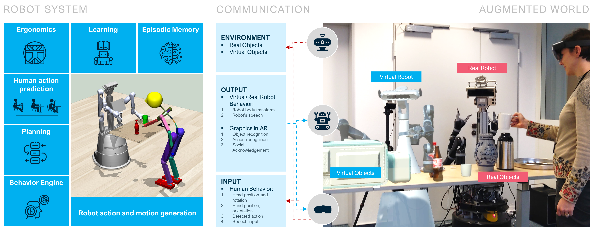

Investigating Explainable Human-Robot Interaction with Augmented Reality
The current spread of social and assistive robotics applications is increasingly highlighting the need for robots that can be easily taught and interacted with, even by users with no technical background. Still, it is often difficult to grasp what such robots know or to assess if a correct representation of the task is being formed. Augmented Reality (AR) has the potential to bridge this gap. We demonstrate three use cases where AR design elements enhance the explainability and efficiency of human-robot interaction: 1) a human teaching a robot some simple kitchen tasks by demonstration, 2) the robot showing its plan for solving novel tasks in AR to a human for validation, and 3) a robot communicating its intentions via AR while assisting people with limited mobility during daily activities.
SYSTEM ARCHITECTURE
Our system is composed of modules realizing the back-end functionalities (learning, planning, prediction and motion generation), and the front-end interface capabilities (visualization and interaction) of the AR glasses
USE CASE 1: EXPLAINABLE HUMAN-ROBOT INTERACTION FOR IMITATION LEARNING
We developed a two-stage skill learning concept. In the first stage, the user demonstrates a skill to the robot, which acquires it using semantic skill learning concepts. The learned representation of the skill is formed by symbols that encode preconditions, actions, and effects. In the second stage, the robot takes initiative and asks curious questions about the demonstrated task to the user. Both stages are designed to enhance the user's mental model of the system using AR and social cues.
USE CASE 2: VISUALIZATION OF THE ROBOT PLANNING
By learning the skills and applying them to new tasks and environments, the system generalizes from previously observed episodes. As a consequence, the generated plans may not be feasible or desired and need validation by a human. Here, we propose an interactive system which can show the plan of the robot to the human via AR glasses before it is executed. The user can give a command to the robot via speech%, such as "make a cup of ice tea". Then the robot will generate a plan to solve the query according to its knowledge at different levels. Before execution, the robot will ask the user to validate the plan in AR. The virtual "avatar" of the robot appears overlaid on the physical body of the robot and real object "shadows" (holographic twins) are displayed in the AR glasses. Then the virtual robot will execute the plan with the virtual objects.
USE CASE 3: COMMUNICATING ROBOT'S INTENTIONS WHILE ASSISTING USERS
Our system is able to: (i) predict the sequence of humans actions, e.g. picking up a bottle and then pouring into a glass. (ii) Evaluating the human posture, e.g. human upper-body configuration while pouring, and decide how to adjust continuous quantities, e.g. change the pose of the glass to improve the human's upper-body configuration while pouring. (iii) Inform the human using AR (e.g. using holograms to show where objects will be relocated), while performing the assistive action. Utilizing AR to reveal the outcome of a future invention allows the user to understand the robot actions, enabling him to comfortably and fluently perform the task.